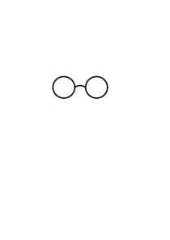
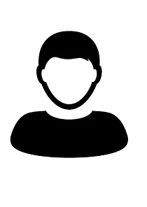
나는 이런 사람입니다.
저는 수동적인 삶을 살았었습니다. 학창 시절 왜 가는지 모르겠는 학원을 다니며 공부를 했습니다. 대학을 위한 공부라고 했습니다.
그게 그렇게 중요한지 몰랐지만, 언제나 착한 학생이고 싶었기에 대학교를 가기로 했습니다. 그러나 수동적인 삶 속에서 내가 이룬 공부는 없고,
정신 차려보니 고3이 되었습니다. 이렇게 가다간 대학은 구경도 못해보겠다는 생각이 들었습니다. 능동적인 공부가 필요했습니다.
벼랑 끝에 찾은 선택지는 논술. 저는 제 인생 처음으로 원하는 학원을 다니게 되었습니다. 그 뒤로 당당히 논술로 숭실대학교에 합격했습니다.
그리고 깨달았습니다. 능동적인 삶은 인생을 바꾸는 힘이 있다는 것을 말이죠. 정말 행복했지만, 딱 한 가지 신경쓰이는 점이 있었습니다.
목표는 대학교였기 때문에 공대에서 경쟁률이 가장 낮은 곳을 지원했습니다. 저에게 과 선택권은 없었던 것이죠.
그래서 저는 전과라는 또 한 번의 능동적 선택을 하려 합니다.
큰 도전이겠지만, 제가 원하는 공부를 하고 싶습니다. 제 길을 선택하고, 하고 싶은 일을 하고 싶은 저는 이런 사람입니다.
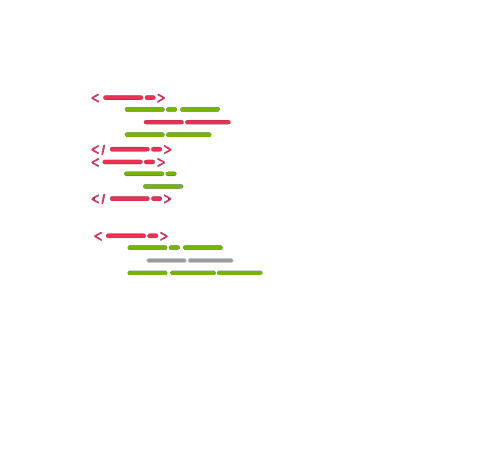
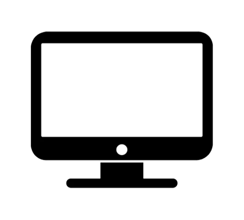
왜 소프트웨어학부인가?
고등학교 1학년 때 잠깐 게임 개발자가 꿈이었던 적이 있었습니다. 그때는 고등학생이 힘들어 잠깐 지나가는 꿈이라 생각했습니다.
그 꿈이 잊힐 즈음, 스펙을 위해 컴퓨터 활용능력 자격증을 공부하게 됐습니다. 그 과정에서 VBA라는 매크로를 배웠습니다.
VBA는 제가 대학교에서 배웠던 스크래치, 파이썬 등과 비슷했습니다. 코드만으로 내가 원하는 걸 만들었다는 사실에 왠지 모르게 가슴이 두근거렸습니다.
잊고 있던 개발자의 꿈이 다시 살아나기 시작했습니다. 단순 변심에 그칠 수 있기 때문에 코딩 공부를 하기로 했습니다.
우선 html부터 CSS, Javascript까지 차근차근 공부해 나갔습니다. 코딩을 배우는 과정은 정말 흥미로웠습니다.
단순 변심이 아니라는 것을 깨닫고, 끝까지 배워보고 싶었습니다.
저는 운이 좋았습니다. 전과라는 선택지가 남아있기 때문이었죠. 고민 끝에 전과하기로 마음먹었고 소프트웨어학부를 가기로 결정했습니다.
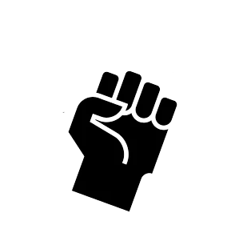
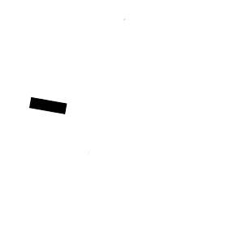
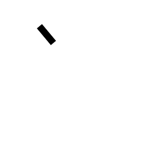
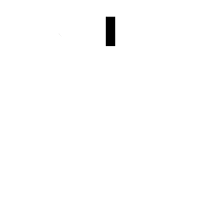
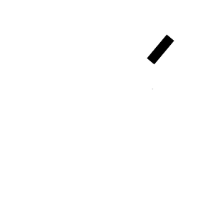
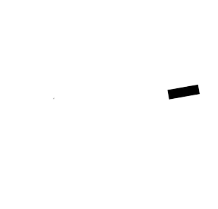
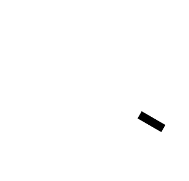
나의 각오는 무겁다.
저는 정이 많아서 무언가를 포기하는 게 참 어렵습니다. 건축학부도 그러했습니다.
당연히 2년 다닌 과에 정이 깊게 생겼습니다. 여전히 같은 자리에서 최선을 다하는 교수님들과 항상 옆에 있어준 동기들이 제 선택을 가장 힘들게 했습니다.
그럴 때마다 소프트웨어학부가 정말 나의 길인지 끈질기게 질문했습니다. 도저히 결론이 안 났습니다. 그래서 조건을 똑같이 해봤습니다.
만약 소프트웨어 학부에 내가 원하는 사람들이 있다면 어떨까? 문제를 그렇게 보니 해답은 간단했습니다. 저는 낯선 환경이 무서워 피하고 있었던 겁니다.
생각을 달리해봅니다. 저는 다른 곳에 가지만 2년 동안 대학에서 만난 인연은 그 자리 그대로 일 것입니다.
낯선 곳이 지치고 힘들 땐 내가 그들에게 찾아가면 되는 거였습니다. 그렇게 생각하니 마음이 한결 편해졌습니다.
낯선 곳이 어디든 부딪힐 자신감이 생겼습니다. 저에겐 더이상 망설임은 없습니다. 저의 각오는 결코 가볍지 않습니다.
 박도형
박도형